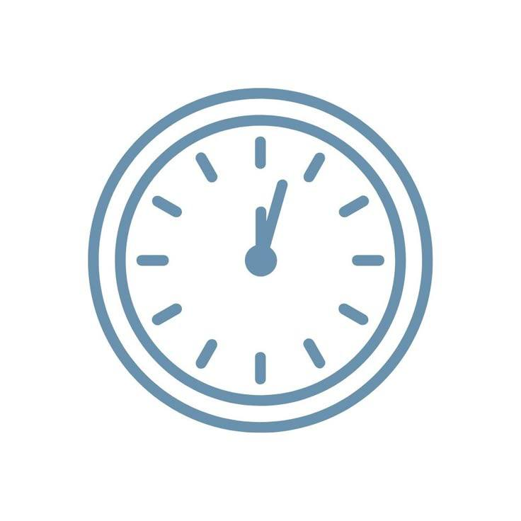

5 способів допомогти без грошей
Ми в "Іскрі" впевнені: допомога не вимірюється лише сумами в чеках. Ваші ресурси, час та увага іноді важать набагато більше. Ось як ви можете підтримати нас прямо зараз:
1. Інформаційна хвиля
Зробіть репост нашого останнього звіту чи збору в Instagram. Це працює! Один ваш клік може привести до нас людину, яка має можливість закрити велику потребу, про яку ми пишемо.
2. Ревізія вдома
Можливо, у вас є теплий одяг, ковдри або дитячі іграшки, які вже не використовуються? Для когось у прифронтовій зоні це може стати справжнім порятунком.

3. Поділіться часом
Іноді нам просто потрібні руки: розвантажити машину, розсортувати продукти по пакетах або допомогти з логістикою. Навіть одна година вашої допомоги-це неоціненний вклад.
4. Ваші таланти-це зброя
Ви вмієте малювати, знаєте іноземні мови або круто монтуєте відео? Будь-яка професійна навичка корисна для фонду. Напишіть нам, і ми знайдемо для вас творче завдання!
5. Добрі слова
Листи підтримки для поранених у лікарнях або малюнки для захисників-це те, що дає сили триматися. Це "моральний донат", який не має ціни, але дарує надію.